Patching the C100's firmware to take retro dithered pics
I bought the Godox C100 because it seemed like a fun toy camera. But when it arrived, I found the shutter sound was so annoying that I wanted to hack the speaker out. Halfway the process of opening the camera though, I realized that although I'm not that much of a firmware tinkerer myself, AI could probably do this way easier, programmatically...
Before I knew it, some hours later, we had patched the firmware to not only remove the annoying audio (with a brief intermezzo of playing Super Mario sounds instead, until my roommate told me to please stop making the sounds so she could go to sleep) ... the camera was now also taking pixelated, dithered black and white pictures instead! Next came the retro color palettes, video recording, and cycling through the settings, now also displayed on screen.
I'd love it if you try it out too!
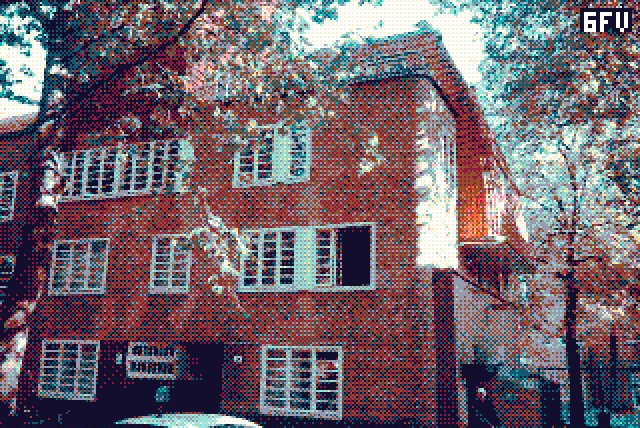
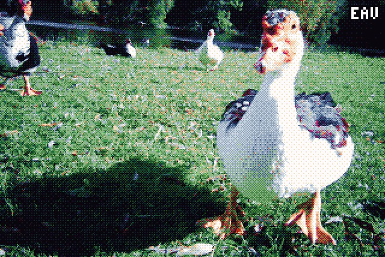
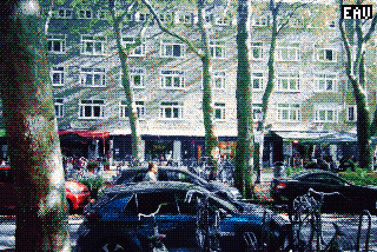
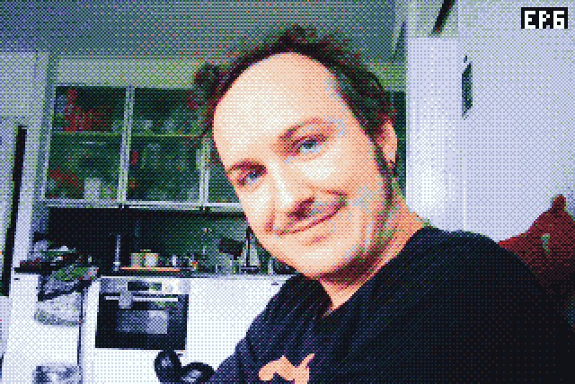
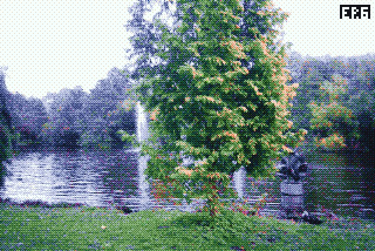
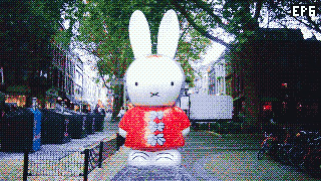
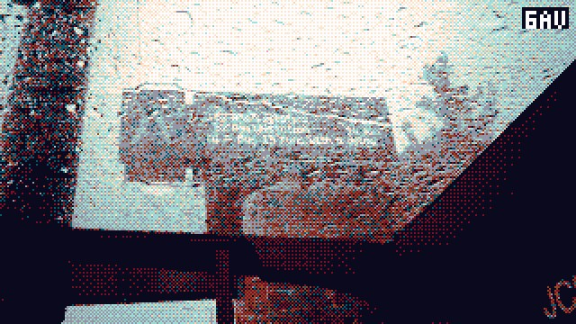
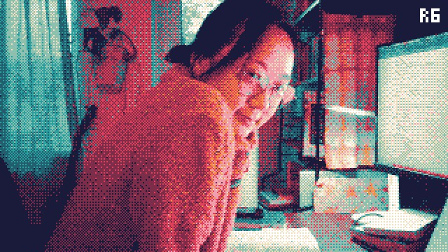
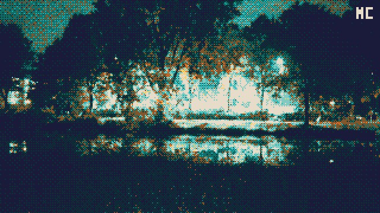
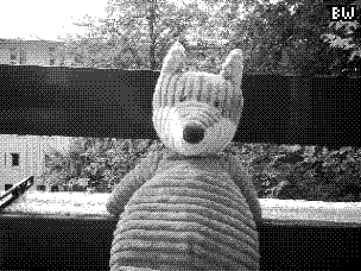
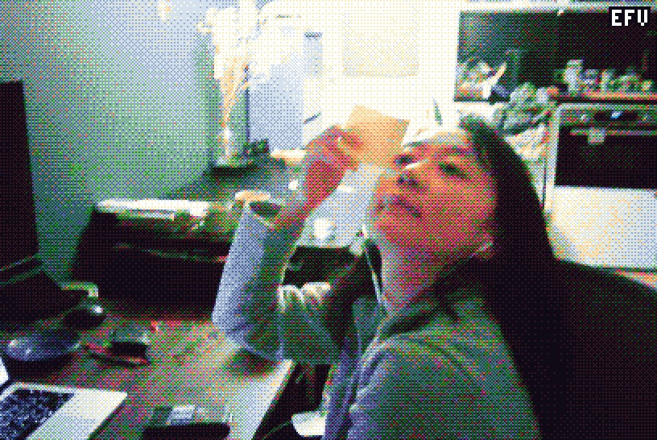
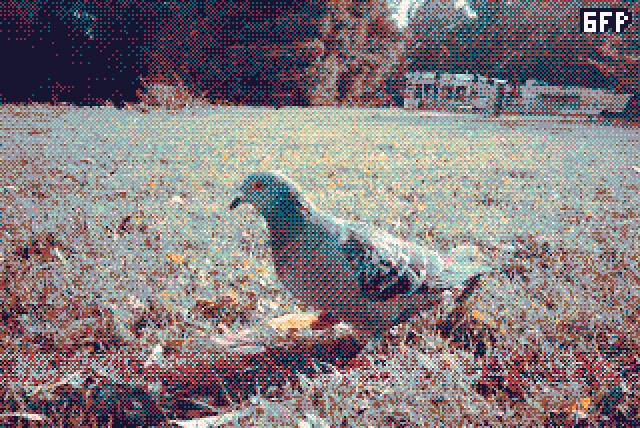
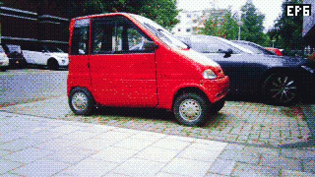
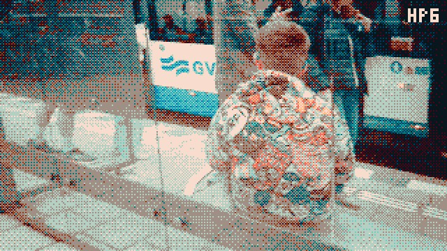
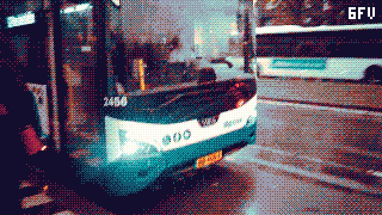
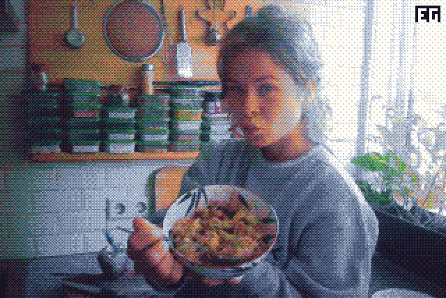
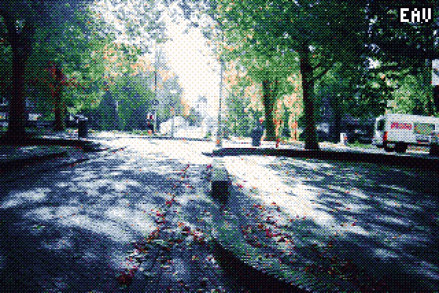
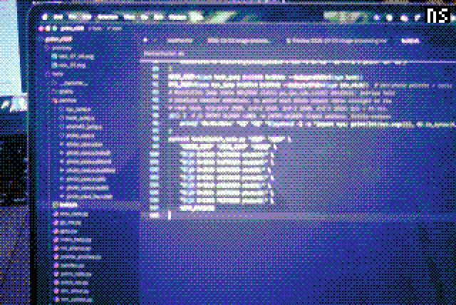
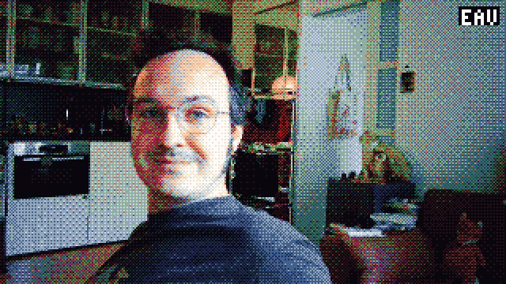
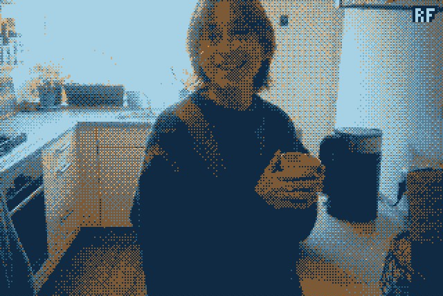
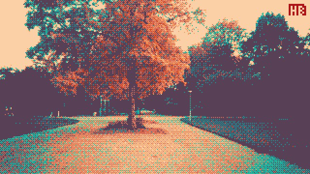
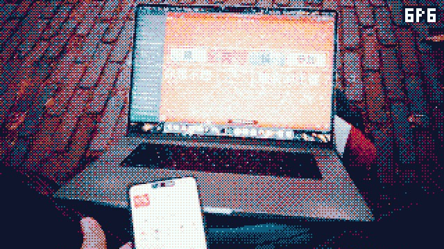
What it does
Every photo and video is shrunk to about 274k pixels (640×428 for 3:2), matched against a small colour palette with ordered dithering, then painted with a film simulation applied. The chosen look is stamped in the top right corner. Presssing the center button switches between the presets; the camera remembers your choice when you turn it off.
- EP6 The Endesga 32 palette, graded like Polaroid 690. Realistic, nice greens for outside, but a funky
- 6FP A six-ink risograph palette through Fuji Provia 100. Less realistic, more retro. I find it works better at night, inside
- BW Not actually black and white but grayscale..
- rnd Chooses a random look for every shot
Oh, and the beeps are gone: the camera is completely silent now (also no hissing sound)
How to put it on your camera
Note: you'll be fine, but I'm not liable for bricking your camera!
-
Put the firmware to the SD
Download firmware v020 · 1.8 MB
Download the firmware and put it in the root of the camera's SD card, then make sure to rename it to exactly:
GP_CARDVR_UPGRADE.BINYou can either connect the camera over USB-C while it's on, copy the file, eject, and turn the camera off; or put the SD card in your computer and then back into the camera while it's off.
-
Flash
Turn the camera on and wait about 10 seconds while the light flashes. Afterwards it will restart by itself, now running the new firmware.
Nothing happening after 10 seconds? Then the file probably ended up in a subfolder, or isn't named quite right (watch out for a hidden
.binextension). -
Have fun!
Want the stock camera back? Flash the official firmware from Godox the same way.
Technical details
Godox publishes the firmware and flashing instructions for the C100, so that meant an easy start. The camera runs on a GeneralPlus GP22B, an ARM chip running FreeRTOS. This turns out to be a popular choice for things like dashcams, kids' cameras, etc. I let Claude Code do the heavy lifting: unpacking the image, finding the place where photos and video frames pass by, and hooking in a palette lookup table and a Bayer dither. You can read Claude's full write-up here, or browse the code and tools.